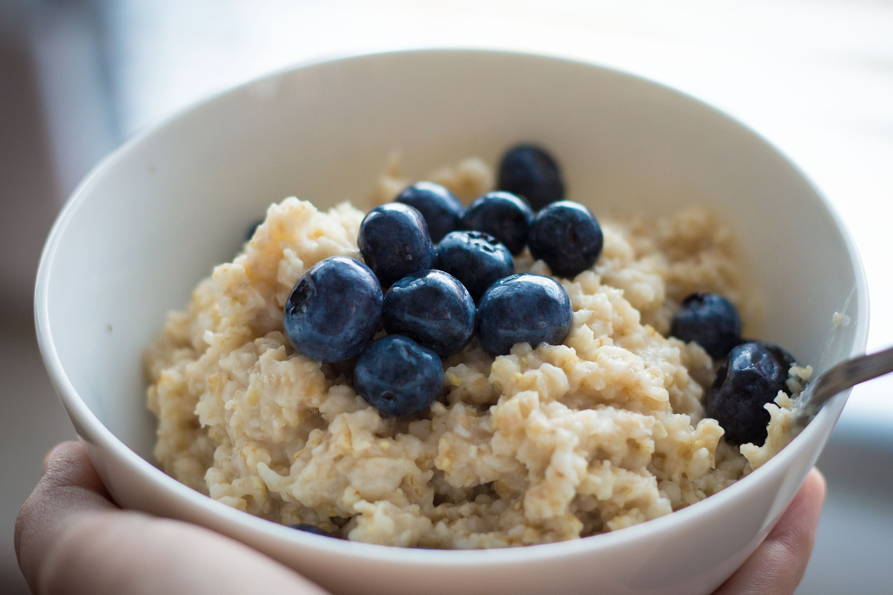

Colleges Turning Students Liberal
This article tackles how colleges turning students liberal is an issue and why it's happening.

Grammys or Scammies
A raw discussion about the Grammys and how viewers reacted to 2021's show, Grammys or Scammies will show you what you did (and didn't) miss.

How to Make the Perfect Bowl of Oatmeal
Learn how to make your oatmeal actually taste good!
Farenheit 451 vs 12 Angry Men
A comparison of two unlike things: Farenheit 451 vs 12 Angry Men shows how these two seemingly different stories have similar underlying themes